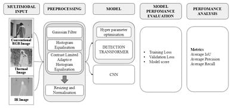
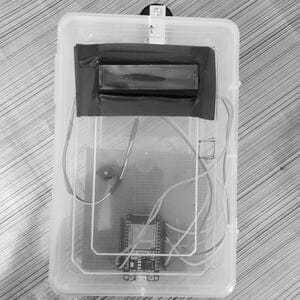

Human Detection System using Deep Learning Methods

What if a camera could spot someone lost in the dark, hidden in smoke, or walking through
fog—without missing a beat? That is the concept this project explores.
Unlike regular cameras, this system combines three types of vision: color (RGB), infrared, and
thermal. Together, they give a clearer, more complete view—day or night, rain or shine.
The system uses preprocessing to clean up the data and a powerful learning model called Detection
Transformer to understand what it sees. It doesn’t just detect shapes, it reads patterns and
behavior.
From search and rescue to autonomous vehicles, this kind of smart vision could help machines see—and
act—more like humans, even in the most challenging environments. Curious? click here.
IOT based Iv Bag Monitoring System

In ICUs, missing a low IV bottle can risk patient lives. This smart monitoring system uses an ESP32
microcontroller and a weight sensor to track fluid levels in real time.
Data is sent to the Blynk app via Wi-Fi or mobile networks, notifying nurses before the fluid runs
out or flows back—avoiding human error.
Designed for hospitals and private care, the system can run 24/7 and store data securely, making IV
monitoring safer and more reliable. You can learn more about it here.
The Silent Janitor: Autonomous Vacuum Bot
Using Arduino and ultrasonic sensors, this bot replicates smart vacuum behavior—obstacle avoidance,
area scanning, and auto-cleaning with minimal logic and parts.
Music in Monochrome: ESP32 MP3 Player [Upcoming]
An e-ink + ESP32-based MP3 player in theory sounds like a match made in heaven. Plays SD card files
with tactile buttons and minimal UI. Analog
soul meets digital logic. I havent started this yet but I plan to very soon, I'd like to keep this
here as a reminder.